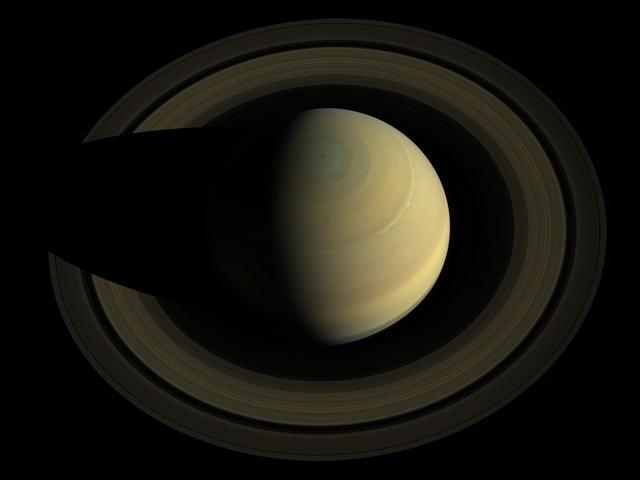

Saturn
Saturn is the second-largest planet and the most famous for its rings. Like Jupiter, it is a gas giant made mostly of hydrogen and helium.
Saturn is so light for its size that it would float in a bathtub big enough to hold it. Its more than 280 known moons include Titan, which is larger than Mercury.

Rings and Moons
Saturn's rings are made of countless pieces of ice and rock, from dust grains to boulders. They stretch about 280,000 kilometers across but are only about 10 meters thick in places.
Titan has a thick atmosphere and lakes of liquid methane. Enceladus shoots plumes of water vapor into space from an ocean hidden beneath its icy shell.
Orbit and Rotation
Saturn takes about 29 Earth years to orbit the Sun, but a day there lasts only about 10.7 hours.
Its axis is tilted about 27 degrees, so Saturn has seasons, and the rings tilt toward or away from Earth as the planet moves along its orbit.
Exploration
Pioneer 11 reached Saturn in 1979, and Voyagers 1 and 2 followed in 1980 and 1981. NASA's Cassini spacecraft arrived in 2004 and studied the planet for 13 years.
Cassini's Huygens probe landed on Titan in 2005. NASA's Dragonfly rotorcraft is planned to explore Titan in the 2030s.